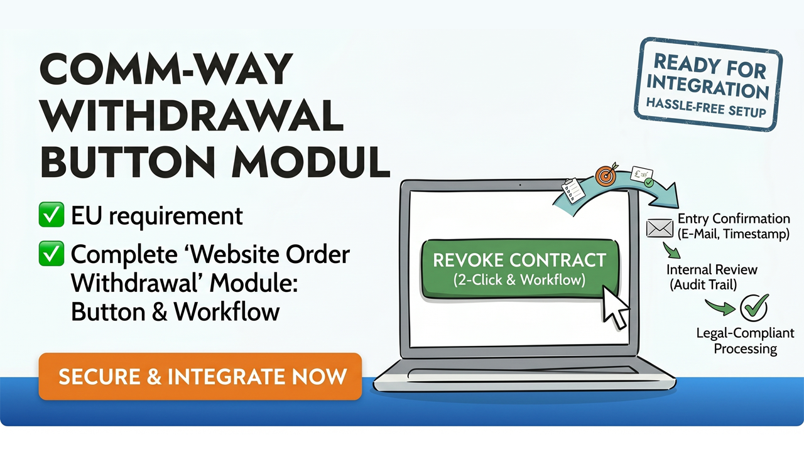
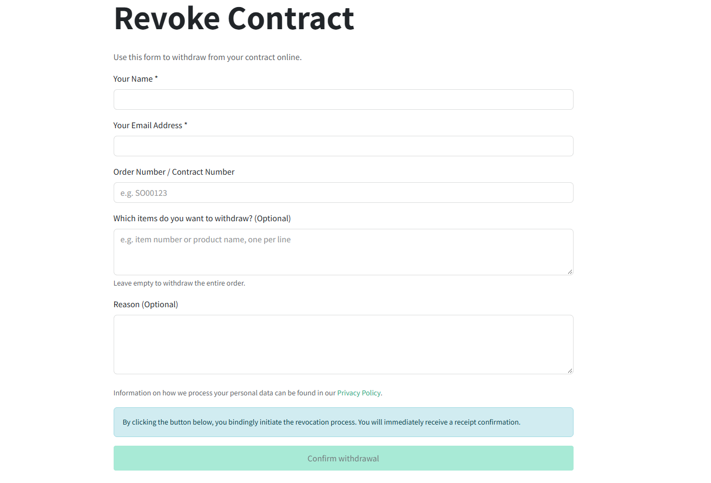
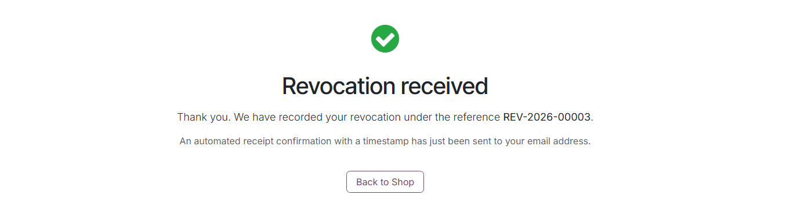
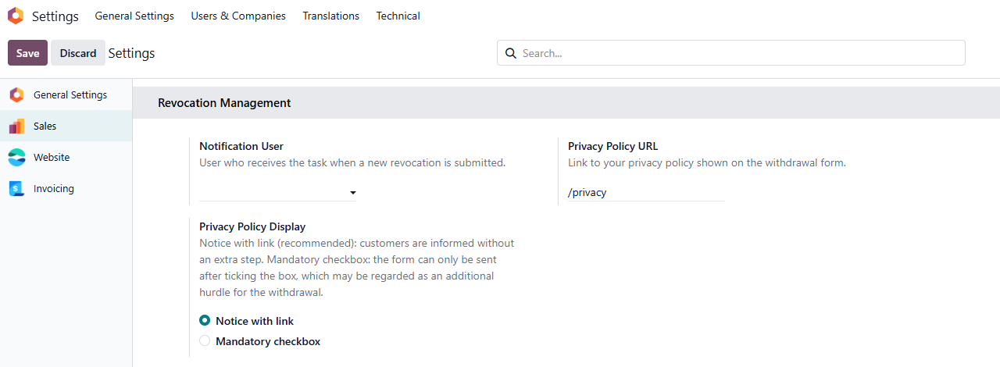
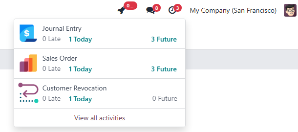
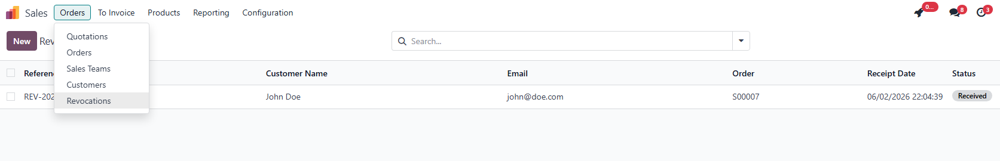
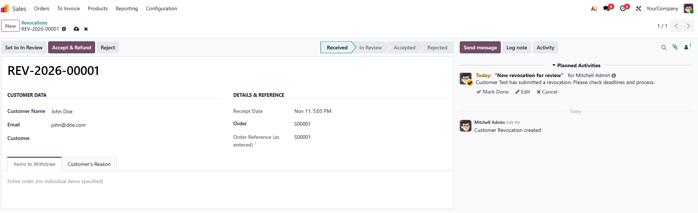

EU Directive 2023/2673
Website Order WithdrawalHelps you implement the online withdrawal function ("withdrawal button") required by Art. 11a of EU Directive 2023/2673, in Austria § 13a FAGG. Customers open the form via "Withdraw from contract", fill in their details and send their declaration with "Confirm withdrawal", directly in your Odoo website.
✓ Native Multi-Website
✓ Guest Checkout Support
✓ Bot & Spam Protection
|
 |
Built for Art. 11a / § 13a FAGGCovers the required form fields (name, contract identification, e-mail), partial withdrawal, a "Confirm withdrawal" button and a receipt confirmation with date and time. |
Automated PipelinesGenerates standalone records inside specialized views, schedules tracking deadlines, and structures processing workflows. |
Protected SecurityIsolates customer data utilizing robust record rule security access control layers (ACL) protecting guest transactions. |
Integrates a custom legal portal subpath (/shop/revocation) accessible anywhere.
Customers enter their name, e-mail address and order or contract number. An optional field lets them withdraw only part of an order (e.g. by item number); if it is left empty, the withdrawal covers the entire order. The declaration is sent with a clearly labelled "Confirm withdrawal" button. Registered customers are recognised automatically, while guests can submit a withdrawal without logging in.

Public forms attract bots. Without protection, automated scripts can flood your backend with fake revocations and abuse the automatic receipt email to send messages to arbitrary addresses through your mail server, which can damage your domain's sender reputation. The withdrawal form is protected on two levels:
💡 Recommended setup: Enable Cloudflare Turnstile under Website › Configuration › Settings and enter your site and secret key. No further configuration of this module is required.
Upon submission, the customer receives an instant on-screen confirmation with a unique reference number. At the same time, a receipt confirmation is sent by e-mail. It contains the content of the withdrawal declaration (name, e-mail, order, withdrawn items, reason) as well as the date and time of receipt.

Configure the entire module directly from the core Sales app settings. Assign a dedicated Notification User to ensure new revocation requests are automatically routed to the correct agent's dashboard. You can also set the Privacy Policy URL and choose how the privacy policy is shown on the form: as a notice with link (default, no extra step for the customer) or as a mandatory checkbox.

Every incoming revocation creates a structured record in the backend and automatically schedules an activity (Next Activity) for the designated Notification User. All automated email notifications and customer replies are directly tracked within the record's chatter, ensuring complete transparency and streamlined communication.

Keep your customer service team efficient with a dedicated list view directly within the Sales app. All incoming revocations are neatly organized, allowing you to filter by status (Received, In Review, Accepted, Rejected), search by reference, and process requests in bulk. The clear overview helps your team keep track of open requests and deadlines.

Inside the detail view, your team has all necessary customer data, order references, and submitted reasons available at a glance. Easily transition the status through the integrated progress bar and utilize the smart action buttons to instantly accept or reject the revocation, triggering the appropriate automated email workflows directly from the interface.
💡 Smart Collaboration: When you assign the revocation request to an internal user or link it to a specific customer record, Odoo automatically adds them as a Follower to the document thread. This ensures that any subsequent updates, comments, or customer replies in the chatter are seamlessly routed to their personal inbox.

Version 1.2.0 (Withdrawal button according to Art. 11a / § 13a FAGG, update recommended)
Note when upgrading: The receipt confirmation e-mail template is updated automatically. Any manual changes you made to this template will be replaced.
Version 1.1.0 (Security update)
Upgrading from an older version: Download the new version, replace the module in your addons path and upgrade it under Apps. Then enable Cloudflare Turnstile in your website settings for full protection. We also recommend reviewing existing revocation records for automated spam entries.
| Multi-Language Ready | Bundled with complete professional translation packages for English (Base Code) as well as German (de_DE) store environments. |
| Structural Engineering | Zero dangerous core database injection patches. Extends clean framework dependencies via base, website, sale_management, and mail tracking controllers. |
| OPL-1 Protected Asset | Released under the standard Odoo Proprietary License protecting distribution rights. Free from activation bottlenecks or localized hardware tokens lock-ins. |
⚖️ Please note: This module provides the technical withdrawal function. It does not replace legal advice. As a shop operator, you still need to update your withdrawal policy and terms and conditions yourself (e.g. with a reference to the online withdrawal function), keep the model withdrawal form available and place the "Withdraw from contract" link prominently in your shop.
|
Professional E-Commerce System Integrations & Custom Enterprise Solutions. We build reliable corporate extensions to scale your Odoo infrastructure flawlessly. Contact Our Support Team ➔ |